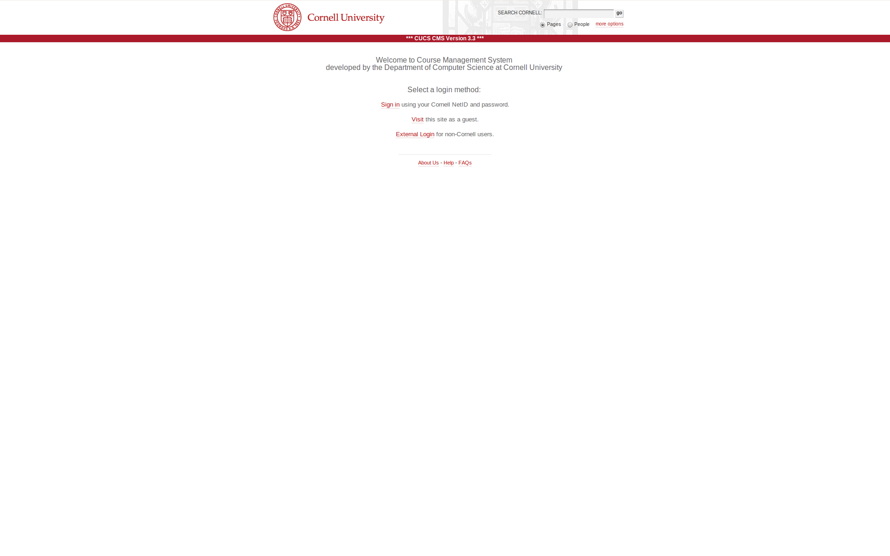
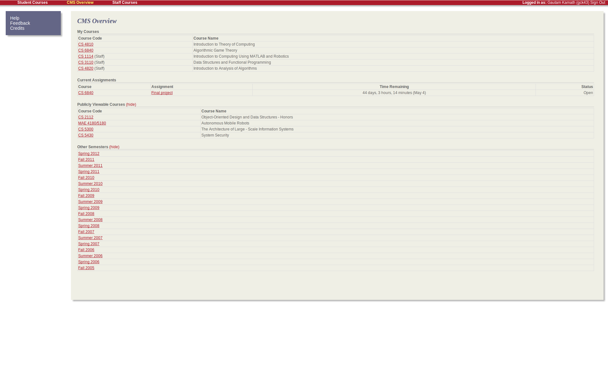
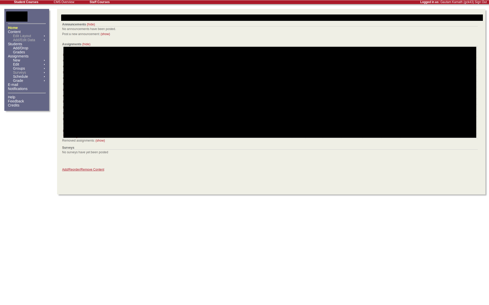
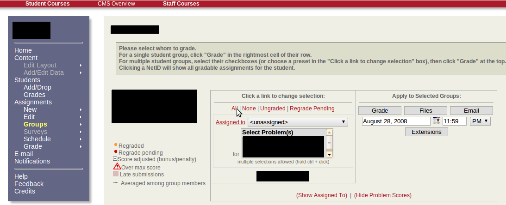
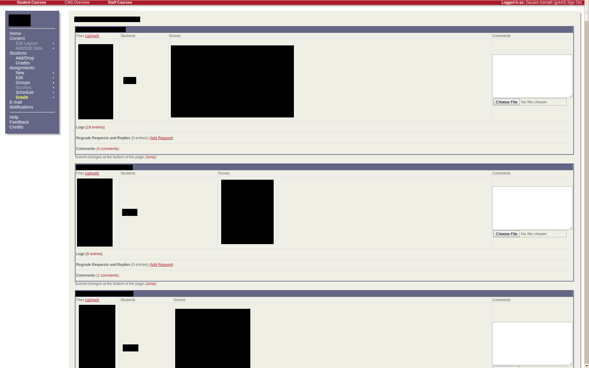
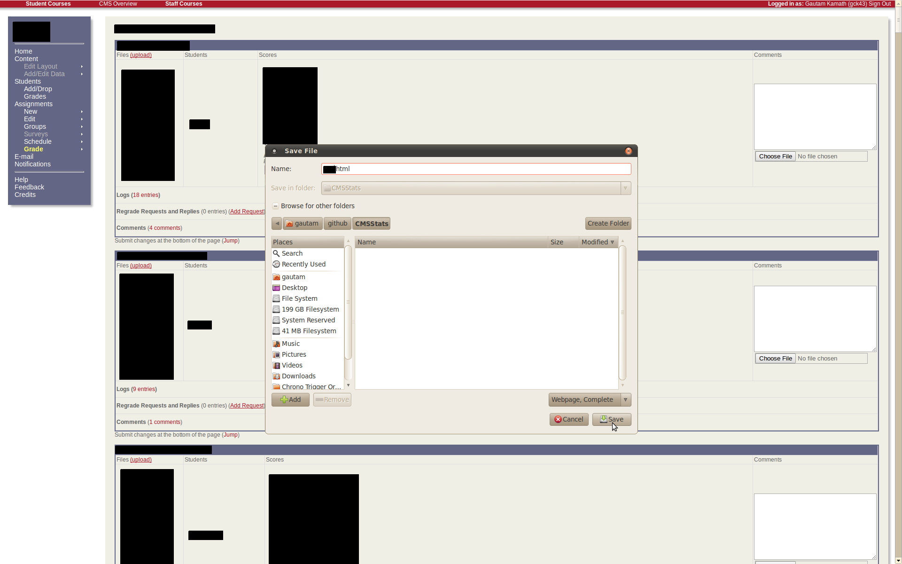
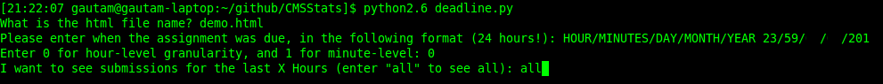
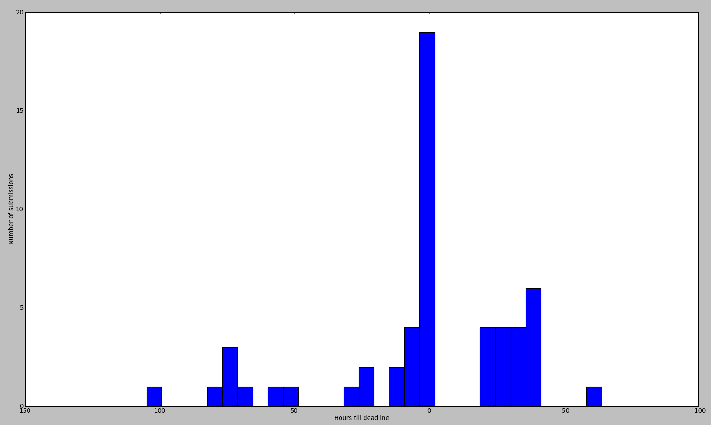

Tutorial for CMSStats
1. Go to cms.csuglab.cornell.edu

2. Log in to CMS

3. Go to the CMS page which you want to calculate statistics for.

4. Click "all" to select all students.

5. Click "Grade".
6. You should now see a page that looks like this:

7. Save this page.

8. Run deadline.py, answering the questions when prompted (some fields blanked below for privacy).

9. View your totally sweet charts!
